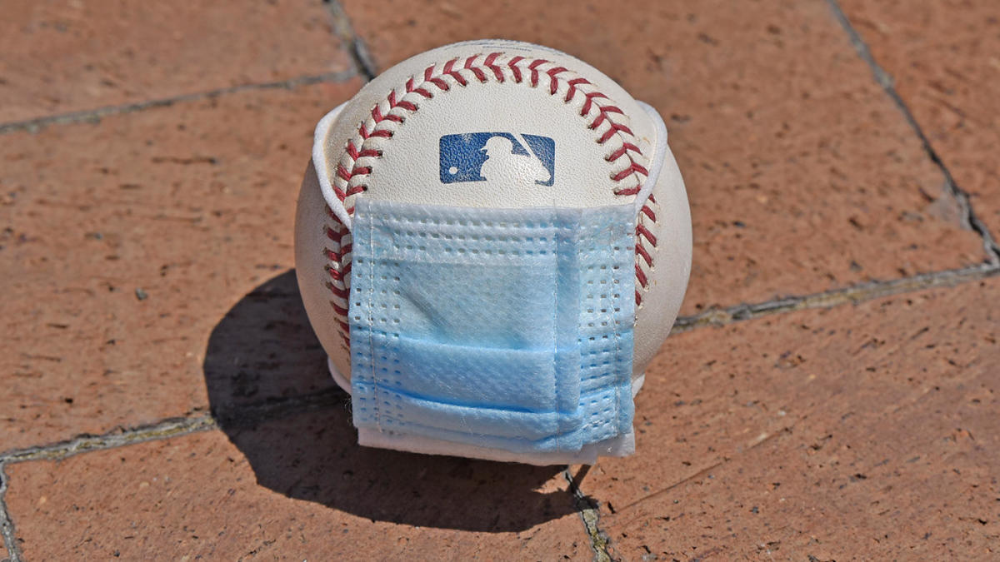
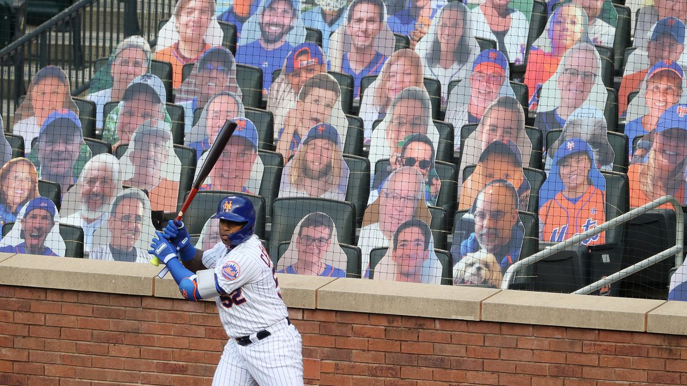
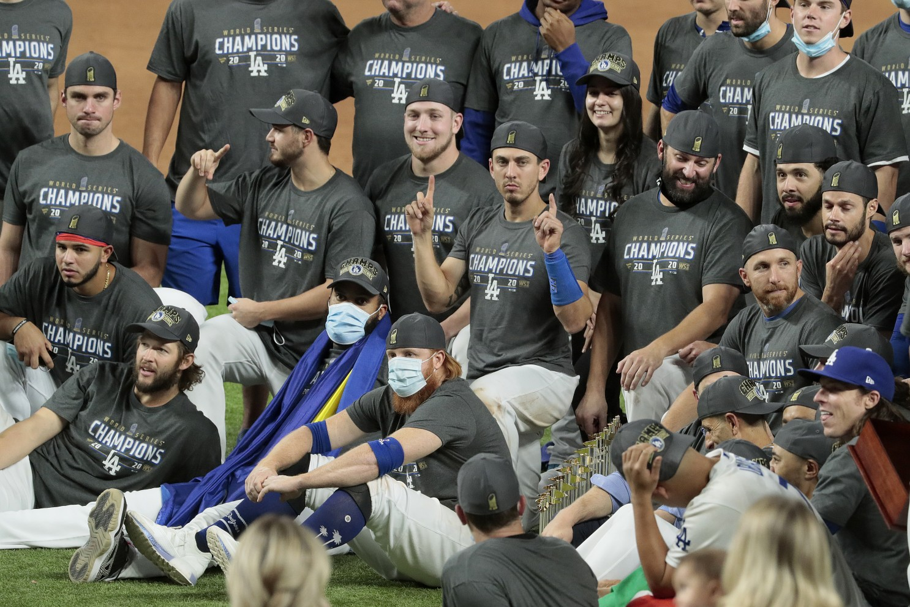

MLB
Context

On March 12th, 2020, the MLB cancelled the rest of spring training. After months of negotiation between the league and its players association, the MLB started its season on July 23rd with a 60 games season and an expanded playoff format. The negotiations took too long and resulted in the loss of revenue and salary for players. Nonetheless, the MLB proceeded with a non-bubble system.
Season

Throughout the season, there were many outbreaks on teams, specifically the St. Louis Cardinals, Detroit Tigers and Miami Marlins. Games were postponed, doubleheaders scheduled, and the Tigers and Cardinals could not complete the full 60 game schedule. All that being said, the MLB was able to complete its season on October 27th with the Los Angeles Dodger winning the World Series. In typical 2020 fashion, in that final game, Dodger third baseman Justin Turner tested positive for COVID-19 in the seventh inning of that game and had to be removed from the game while his teammates closed out the series. Violating protocol, he returned to the field to celebrate with his teammates, as seen in the center of the photo above. The MLB did not issue any consequences for that action.
Future

COVID-19 will have a large impact on the future of the MLB. In addition to the potential lower salaries of players, the current Collective Bargaining Agreement (CBA) is set to expire on December 1st, 2021. The CBA is an agreement between the owners and players about salary distribution among other things. The bad blood and loss of revenue from negotiations this season is projected to spill over into those talks, potentially leading to a strike from the players for the 2021 season. Only time will tell if this can be avoided.